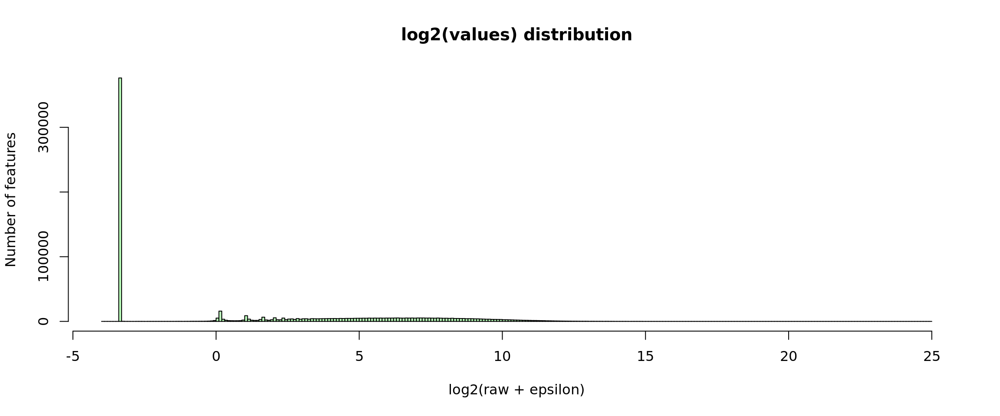

Pavkovic, M., Pantano, L., Gerlach, C.V. et al. Multi omics analysis of fibrotic kidneys in two mouse models. Sci Data 6, 92 (2019).
Samples from two mouse models were collected. The first one is a reversible chemical-induced injury model (folic acid (FA) induced nephropathy). The second one is an irreversible surgically-induced fibrosis model (unilateral ureteral obstruction (UUO)). mRNA and small RNA sequencing, as well as 10-plex tandem mass tag (TMT) proteomics were performed with kidney samples from different time points over the course of fibrosis development. In the FA model, mice were sacrificed before the treatment (day 0) and 1, 2, 7, and 14 days after a single injection of folic acid. For the UUO model, mice were sacrificed before obstruction (day 0) and 3, 7, and 14 days after the ureter of the left kidney was obstructed via ligation. For both studies, kidneys were removed at each time point for total RNA isolation and protein sample preparation.
We will first explore the UUO transcriptome data.
| Doc | URL |
|---|---|
| Total RNA for the experiment on Unilateral ureter obstruction (UUO) model | https://www.ncbi.nlm.nih.gov/geo/query/acc.cgi?acc=GSE118339 |
| Supplementary material of the article with all the data tables (zip archive) | https://zenodo.org/record/2592516 |
We define all the parameters of the analysis in a list, which can be adapted to handle different data types (transcrptome, proteome, small RNA) or treatments (uuo, fa) with the same script.
#### Define parameters for the analysis ####
## Keep a trace of the original parameters
par.ori <- par(no.readonly = TRUE)
## Analysis parameters
parameters <- list(
datatype = "transcriptome", ## Supported: transcriptome, proteome
dataset = "fa", ## Supported: uuo, fa
epsilon = 0.1,
forceDownload = FALSE)
if (parameters$datatype == "transcriptome") {
parameters$undetectedLimit = 10
} else if (parameters$datatype == "proteome") {
parameters$undetectedLimit = 100
}
## Redefine the directory and prefix of the figures exported by knitr
parameters$filePrefix <- paste0('pavkovic2019_', parameters$datatype, "_", parameters$dataset, "_")
## Print the parameters
kable(t(as.data.frame(parameters)), col.names = "Parameter")| Parameter | |
|---|---|
| datatype | transcriptome |
| dataset | fa |
| epsilon | 0.1 |
| forceDownload | FALSE |
| undetectedLimit | 10 |
| filePrefix | pavkovic2019_transcriptome_fa_ |
All directories are defined relative to the main directory, in order to ensure reusability of the code.
#### Output directories ####
outdirs <- list()
outdirs$main <- "."
## Data directory, where the data will be downloaded and uncompressed
outdirs$data <- file.path(outdirs$main, "data")
dir.create(outdirs$data, recursive = TRUE, showWarnings = FALSE)
## Main result directory
outdirs$results <- file.path(outdirs$main, "results")
## Figures
outdirs$figures <- file.path('figures', parameters$datatype, parameters$dataset)
# Results for this data type
outdirs$datatype <- file.path(outdirs$results, parameters$datatype)
# Results for this dataset
outdirs$dataset <- file.path(outdirs$datatype, parameters$dataset)
dir.create(outdirs$dataset, recursive = TRUE, showWarnings = FALSE)
## Print the directories
kable(t(as.data.frame.list(outdirs)), col.names = "Directories", caption = "Directories")| Directories | |
|---|---|
| main | . |
| data | ./data |
| results | ./results |
| figures | figures/transcriptome/fa |
| datatype | ./results/transcriptome |
| dataset | ./results/transcriptome/fa |
#### Download transcriptome data ####
archiveFile <- "MouseKidneyFibrOmics-v1.0.zip"
archiveURL <- file.path("https://zenodo.org/record/2592516/files/hbc", archiveFile)
localDataArchive <- file.path(outdirs$data, archiveFile)
if (file.exists(localDataArchive) & !parameters$forceDownload) {
message("Data archive already downloaded:\n\t", localDataArchive)
} else {
message("Downloading data archive from zenodo: ", archiveURL)
download.file(url = archiveURL, destfile = localDataArchive)
## Uncompess the archive
message("Uncompressing data archive")
unzip(zipfile = localDataArchive, exdir = outdirs$data)
}
## Define destination directory
# outdirs$csv <- file.path(outdirs$data, "CSV")
# dir.create(outdirs$csv, showWarnings = FALSE, recursive = TRUE)#### Load raw counts data table ####
## Note: the "raw" counts are decimal numbers, I suspect that they have been somewhat normalized. To check.
if (parameters$datatype == "transcriptome") {
rawCountFile <- file.path(
outdirs$data,
paste0("hbc-MouseKidneyFibrOmics-a39e55a/tables/",
parameters$dataset,
"/results/counts/raw_counts.csv.gz"))
} else if (parameters$datatype == "proteome") {
rawCountFile <- file.path(
outdirs$data,
paste0("hbc-MouseKidneyFibrOmics-a39e55a/tables/p",
parameters$dataset,
"/results/counts/",
parameters$dataset, "_model_counts.csv"))
}
rawData <- read.csv(file = rawCountFile, header = 1, row.names = NULL)
# names(rawData)
rownames(rawData) <- make.names(rawData[, 1], unique = TRUE)
# names(rawData)
# unique(sort(as.vector(rawData[, "id"])))
# length(unique(sort(as.vector(rawValues[, 1]))))
## Extract a separate data frame with only the values to analyse
rawValues <- rawData[, -1] The data was loaded from the supplementary file ./data/hbc-MouseKidneyFibrOmics-a39e55a/tables/fa/results/counts/raw_counts.csv.gz as raw counts.
We roughly build a minimal metadata table from the info we find in the data table. This should be improved by importing dataset-specific information for a more relevant analysis.
#### Build metadata table ####
metadata <- data.frame(
dataType = "transcriptome",
sampleName = colnames(rawValues))
metadata[ , c("condition", "sampleNumber")] <-
str_split_fixed(string = metadata$sampleName, pattern = "_", n = 2)
## Colors per condition
colPerCondition <- c(normal = "#BBFFBB",
day1 = "#FFFFDD",
day2 = "#FFDD88",
day3 = "#FFBB44",
day7 = "#FF8800",
day14 = "#FF4400")
metadata$color <- colPerCondition[metadata$condition]
kable(metadata, caption = paste0("Rough metadata table. ",
"Data type = ", parameters$datatype,
"Dataset = ", parameters$dataset))| dataType | sampleName | condition | sampleNumber | color |
|---|---|---|---|---|
| transcriptome | day1_1 | day1 | 1 | #FFFFDD |
| transcriptome | day1_2 | day1 | 2 | #FFFFDD |
| transcriptome | day1_3 | day1 | 3 | #FFFFDD |
| transcriptome | day14_1 | day14 | 1 | #FF4400 |
| transcriptome | day14_2 | day14 | 2 | #FF4400 |
| transcriptome | day14_3 | day14 | 3 | #FF4400 |
| transcriptome | day2_1 | day2 | 1 | #FFDD88 |
| transcriptome | day2_2 | day2 | 2 | #FFDD88 |
| transcriptome | day2_3 | day2 | 3 | #FFDD88 |
| transcriptome | day3_1 | day3 | 1 | #FFBB44 |
| transcriptome | day3_2 | day3 | 2 | #FFBB44 |
| transcriptome | day3_3 | day3 | 3 | #FFBB44 |
| transcriptome | day7_1 | day7 | 1 | #FF8800 |
| transcriptome | day7_2 | day7 | 2 | #FF8800 |
| transcriptome | day7_3 | day7 | 3 | #FF8800 |
| transcriptome | normal_1 | normal | 1 | #BBFFBB |
| transcriptome | normal_2 | normal | 2 | #BBFFBB |
| transcriptome | normal_3 | normal | 3 | #BBFFBB |
We describe our data by computing sample-wise descriptors of the central tendency (mean, median), dispersion (standard deviation, inter-quartile range) and some milestone percentiles (05, 25, 50, 75, 95).
sampleStat <- metadata
sampleStat$mean <- apply(X = rawValues, 2, mean)
sampleStat$median <- apply(X = rawValues, 2, median)
sampleStat$sd <- apply(X = rawValues, 2, sd)
sampleStat$IQR <- apply(X = rawValues, 2, IQR)
sampleStat$min <- apply(X = rawValues, 2, min)
sampleStat$perc05 <- apply(X = rawValues, 2, quantile, prob = 0.05)
sampleStat$Q1 <- apply(X = rawValues, 2, quantile, prob = 0.25)
sampleStat$median <- apply(X = rawValues, 2, quantile, prob = 0.5)
sampleStat$Q3 <- apply(X = rawValues, 2, quantile, prob = 0.75)
sampleStat$perc95 <- apply(X = rawValues, 2, quantile, prob = 0.95)
sampleStat$max <- apply(X = rawValues, 2, max)
## Print statistics per sample
kable(format(x = format(digits = 5, sampleStat)))| dataType | sampleName | condition | sampleNumber | color | mean | median | sd | IQR | min | perc05 | Q1 | Q3 | perc95 | max |
|---|---|---|---|---|---|---|---|---|---|---|---|---|---|---|
| transcriptome | day1_1 | day1 | 1 | #FFFFDD | 663.06 | 1.1055 | 65219 | 58.764 | 0 | 0 | 0 | 58.764 | 754.41 | 13174979 |
| transcriptome | day1_2 | day1 | 2 | #FFFFDD | 1224.51 | 3.0536 | 123141 | 111.712 | 0 | 0 | 0 | 111.712 | 1445.26 | 25118595 |
| transcriptome | day1_3 | day1 | 3 | #FFFFDD | 1368.61 | 3.7667 | 133450 | 122.382 | 0 | 0 | 0 | 122.382 | 1567.42 | 27255572 |
| transcriptome | day14_1 | day14 | 1 | #FF4400 | 540.26 | 2.0257 | 54481 | 65.013 | 0 | 0 | 0 | 65.013 | 697.51 | 11178198 |
| transcriptome | day14_2 | day14 | 2 | #FF4400 | 682.00 | 2.0329 | 74825 | 69.057 | 0 | 0 | 0 | 69.057 | 805.78 | 15430799 |
| transcriptome | day14_3 | day14 | 3 | #FF4400 | 562.57 | 2.2473 | 56027 | 75.117 | 0 | 0 | 0 | 75.117 | 727.79 | 11575718 |
| transcriptome | day2_1 | day2 | 1 | #FFDD88 | 1161.76 | 3.5015 | 103599 | 127.047 | 0 | 0 | 0 | 127.047 | 1612.19 | 21036079 |
| transcriptome | day2_2 | day2 | 2 | #FFDD88 | 223.88 | 0.0000 | 20432 | 14.542 | 0 | 0 | 0 | 14.542 | 229.94 | 4037963 |
| transcriptome | day2_3 | day2 | 3 | #FFDD88 | 628.44 | 1.4782 | 57481 | 63.361 | 0 | 0 | 0 | 63.361 | 849.71 | 11662570 |
| transcriptome | day3_1 | day3 | 1 | #FFBB44 | 649.84 | 2.0761 | 55211 | 77.844 | 0 | 0 | 0 | 77.844 | 920.35 | 11170233 |
| transcriptome | day3_2 | day3 | 2 | #FFBB44 | 514.86 | 1.9417 | 42768 | 74.165 | 0 | 0 | 0 | 74.165 | 827.81 | 8612320 |
| transcriptome | day3_3 | day3 | 3 | #FFBB44 | 854.10 | 2.9758 | 80565 | 104.951 | 0 | 0 | 0 | 104.951 | 1128.02 | 16484449 |
| transcriptome | day7_1 | day7 | 1 | #FF8800 | 576.24 | 2.2562 | 53113 | 90.510 | 0 | 0 | 0 | 90.510 | 899.23 | 10690493 |
| transcriptome | day7_2 | day7 | 2 | #FF8800 | 510.27 | 2.5377 | 47373 | 80.575 | 0 | 0 | 0 | 80.575 | 815.95 | 9682527 |
| transcriptome | day7_3 | day7 | 3 | #FF8800 | 604.97 | 2.8747 | 59073 | 83.500 | 0 | 0 | 0 | 83.500 | 880.28 | 12164986 |
| transcriptome | normal_1 | normal | 1 | #BBFFBB | 576.30 | 1.1667 | 57644 | 46.384 | 0 | 0 | 0 | 46.384 | 616.16 | 11777395 |
| transcriptome | normal_2 | normal | 2 | #BBFFBB | 1172.56 | 2.9758 | 111510 | 103.137 | 0 | 0 | 0 | 103.137 | 1387.60 | 22658521 |
| transcriptome | normal_3 | normal | 3 | #BBFFBB | 531.86 | 1.0817 | 57204 | 41.807 | 0 | 0 | 0 | 41.807 | 521.21 | 11636735 |
hist(unlist(rawValues),
breaks = 1000,
main = "Raw value distribution",
xlab = "Raw values",
ylab = "Number of features (all samples)")Distribution of raw counts
The distribution of raw counts is not very informative, because the range is defined by some outlier, i.e. a feature having a huge values respective to the rest of the distribution.
This problem is particularly sensitive for RNA-seq data: even with a strong zoom on the abcsissa range from 0 to 500, the histogram shows a steep drop in the first bins.
In order to see the relevant part of the data it is convenient to truncate the histogram to the 95th percentile.
#### Count distrib - truncated right tail ####
## Compute the percentile 95 of all the data
p95 <- quantile(x = unlist(rawValues), probs = 0.95)
## Select the values below this percentile
allValues <- unlist(rawValues)
# length(allValues)
p95Values <- allValues[allValues <= p95]
# length(p95Values)
## Plot the histogram
hist(p95Values, breaks = 100,
main = "Distribution of raw values\nbelow the 95th percentile",
xlab = "Raw values (below percentile 95)",
ylab = "Number of features (all samples)")Distribution of raw counts
For visualization, it is sometimes convenient to truncate both tails of the distribution, in order to avoid both the outliers (right tail) and the sometimes large number of zero values. This is particularly useful for single-cell RNA-seq data, which can have a “zero-inflated” distribution, but it is also useful for other data types.
#### Count distrib - truncated on both tails ####
## Compute the percentile 95 of all the data
p05 <- quantile(x = unlist(rawValues), probs = 0.05)
p95 <- quantile(x = unlist(rawValues), probs = 0.95)
## Select the values below this percentile
allValues <- unlist(rawValues)
# length(allValues)
trimmedValues <- allValues[(allValues >= p05) & (allValues <= p95)]
# length(trimmedValues)
## Plot the histogram
hist(trimmedValues, breaks = 100,
main = "Distribution of trimmed raw values\nfrom p05 to p95",
xlab = "Raw values (between p05 and p95)",
ylab = "Number of features (all samples)")Distribution of raw counts
A typical normalising approach is apply a log2 transformation .
For RNA-seq data, this might however create a problem when the counts of a given gene in a given sample is 0. To circumvent this, we can add an epsilon (\(\epsilon = 0.1\)) before the log2 transformation.
Note: Pancovic’s “raw counts” are actually decimal numbers and their mimimal value is higher than 0. The epsilon is thus not required but we keep it in this script in order to enable re-using it with other data sources.
#### Log2 transformation ot the raw values ####
log2Values <- log2(rawValues + parameters$epsilon)
## Plot the histogram of log2-transformed values
x <- unlist(log2Values)
minx <- floor(min(x))
maxx <- ceiling(max(x))
hist(x,
breaks = seq(from = minx, to = maxx, by = 0.1),
main = "log2(values) distribution",
xlab = "log2(raw + epsilon)",
ylab = "Number of features", col = "#BBFFBB")
We can now inspect the distribution of counts per sample with the boxplot() function.
#### Box plots - raw vs log2-ransformed ####
par(mar = c(4, 6, 5, 1))
par(mfrow = c(1,2))
boxplot(rawValues,
col = metadata$color,
horizontal = TRUE,
las = 1,
main = "Raw values",
xlab = "Raw value")
boxplot(log2Values,
col = metadata$color,
horizontal = TRUE,
las = 1,
main = "log2-transformed",
xlab = "log2(value)")Box plot of the raw values (left) and log2-transformed values (right)
We filter out the features having very low values across all the samples, which we consider as undetected.
## Filter out the features with very low counts in all conditions
undetectedFeatures <- apply(rawValues, MARGIN = 1, FUN = sum) < parameters$undetectedLimit
# table(undetectedFeatures)
log2Filtered <- log2Values[!undetectedFeatures, ]
#### Box plots before and after filtering ####
par(mar = c(4, 6, 5, 1))
par(mfrow = c(1,2))
boxplot(log2Values,
col = metadata$color,
horizontal = TRUE,
las = 1,
main = "log2-transformed",
xlab = "log2(value)")
boxplot(log2Filtered,
col = metadata$color,
horizontal = TRUE,
las = 1,
main = "Filtered features",
xlab = "log2(value)")Box plot of the log2-transformed values before (left) and after (right) feature filtering.
We filtered out all the features whose maximal count value across all samples was lower than 10. Among the 46679 genes from the raw count table, 17761 were considered undetected according to this criterion. We use the remaining 28918 genes for the subsequent analyses.
Before going any further, it is important to ensure some standardization of the samples, in order to correct for biases due to inter-sample differences in sequencing depth (RNA-seq) or other sample-specific bias.
For the sake of simplicity, we will use here a very simple criterion: median-based centering.
When we start from the raw values, the principle is to divide the counts of each sample by a sample-specific scaling factor in order to bring each sample to the same median count.
Since we are working with log2-transformed values, we compute the difference, which is equivalent to apply a ratio to the raw values.
#### Median-based centering ####
sampleLog2Medians <- apply(log2Filtered, 2, median)
seriesLog2Median <- median(sampleLog2Medians)
log2MedianCentered <- data.frame(matrix(
nrow = nrow(log2Filtered),
ncol = ncol(log2Filtered)))
colnames(log2MedianCentered) <- colnames(log2Filtered)
rownames(log2MedianCentered) <- rownames(log2Filtered)
for (j in 1:ncol(log2Filtered)) {
log2MedianCentered[, j] <- log2Filtered[, j] - sampleLog2Medians[j] + seriesLog2Median
}
#### Box plots after median-based centering ####
#### Box plots before and after filtering ####
par(mar = c(4, 6, 5, 1))
par(mfrow = c(1,2))
boxplot(log2Filtered,
col = metadata$color,
horizontal = TRUE,
las = 1,
main = "Filtered features",
xlab = "log2(value)")
boxplot(log2MedianCentered,
col = metadata$color,
horizontal = TRUE,
las = 1,
main = "Median-based centered",
xlab = "log2(value)")Box plot of the log2-transformed feature-filtered values before (left) and after (right) median-based standardization.
Consistently, after centering, all the medians appear aligned on the box plot.
The second step of standardization is to ensure homogeous dispersion between samples. This relies on some biological assumption, so it has to be evaluated on a case-per-case basis.
My trick: for high-throughput data, I generally use the inter-quartile range (IQR) rather than the standard deviation as scaling factor. This ensures robustness to outliers, which may have a very strong impact for some datatypes (e.g. RNA-seq).
#### IQR-based scaling ####
sampleIQR <- apply(log2MedianCentered, 2, IQR)
seriesIQR <- median(sampleIQR)
scalingFactors <- sampleIQR / seriesIQR
log2Standardized <- data.frame(matrix(
nrow = nrow(log2Filtered),
ncol = ncol(log2Filtered)))
colnames(log2Standardized) <- colnames(log2MedianCentered)
rownames(log2Standardized) <- rownames(log2MedianCentered)
for (j in 1:ncol(log2MedianCentered)) {
log2Standardized[, j] <-
(log2Filtered[, j] - sampleLog2Medians[j] ) / scalingFactors[j] + seriesLog2Median
}
## Check the IQR after scaling
# apply(log2Standardized, 2, IQR)
#### Box plots after median-based centering ####
#### Box plots before and after filtering ####
par(mar = c(4, 6, 5, 1))
par(mfrow = c(1,2))
boxplot(log2MedianCentered,
col = metadata$color,
horizontal = TRUE,
las = 1,
main = "Median-based centered",
xlab = "log2(value)")
boxplot(log2Standardized,
col = metadata$color,
horizontal = TRUE,
las = 1,
main = "Standardized\n(median centering, IQR scaling)",
xlab = "log2(value)")Box plot of the log2-transformed feature-filtered values before (left) and after (right) IQR-based scaling.
At the end of this journey, we can compare the raw and the standardized values. Needless to say that the preceding steps quite transformed the data. Since this will likely impact all the subsequent analyses, it is worth making sure we took the right choices for each step (filtering, log2-transformation, centering, scaling). This should be evaluated based on your knowledge of your data.
#### Violin plots ####
par(mar = c(4, 6, 5, 1))
par(mfrow = c(1,2))
boxplot(rawValues,
col = metadata$color,
horizontal = TRUE,
las = 1,
main = "Raw values",
xlab = "raw value")
boxplot(log2Standardized,
col = metadata$color,
horizontal = TRUE,
las = 1,
main = "Filtered, normalized and standardized",
xlab = "log2(counts)")Box plot of the raw values (left) and the final data after feature filtering, normalization by log2 transormation, centering and scaling (right).
We can also inspect the distribution of counts per sample with the vioplot() function.
#### Violin plots ####
par(mar = c(4, 6, 5, 1))
par(mfrow = c(1,2))
vioplot::vioplot(rawValues,
col = metadata$color,
horizontal = TRUE,
las = 1,
main = "Raw values",
xlab = "raw value")
vioplot::vioplot(log2Standardized,
col = metadata$color,
horizontal = TRUE,
las = 1,
main = "Filtered, normalized and standardized",
xlab = "log2(counts)")Box plot of the raw values (left) and the final data after feature filtering, normalization by log2 transormation, centering and scaling (right).
We can also inspect the distribution of counts per sample with the plot() function.
We export the pre-processed data in separate tables for further reuse.
#### Save tables ####
outfiles <- vector()
## Raw counts, all the variables
outfiles["raw"] <- file.path(outdirs$dataset,
paste0(parameters$filePrefix,
"raw.tsv.gz"))
write.table(x = format(digits = 3, big.mark = "", decimal.mark = ".", rawValues),
dec = ".",
file = gzfile(outfiles["raw"], "w"),
quote = FALSE,
sep = "\t")
## Log2-transformed counts, all the features
outfiles["log2"] <- file.path(outdirs$dataset,
paste0(parameters$filePrefix,
"log2.tsv.gz"))
write.table(x = format(digits = 3, big.mark = "", decimal.mark = ".", log2Values),
dec = ".",
file = gzfile(outfiles["log2"], "w"),
quote = FALSE, sep = "\t")
## Filtered features only, log2-transformed values
outfiles["filtered"] <- file.path(outdirs$dataset,
paste0(parameters$filePrefix,
"log2_filtered.tsv.gz"))
write.table(x = format(digits = 3, big.mark = "", decimal.mark = ".", log2Filtered),
dec = ".",
file = gzfile(outfiles["filtered"], "w"),
quote = FALSE, sep = "\t")
## Filtered genes only, log2-transformed and centered but not scaled data
outfiles["centered"] <- file.path(outdirs$dataset,
paste0(parameters$filePrefix,
"log2_median-centered.tsv.gz"))
write.table(x = format(digits = 3, big.mark = "", decimal.mark = ".", log2MedianCentered),
dec = ".",
file = gzfile(outfiles["centered"], "w"),
quote = FALSE, sep = "\t")
## Filtered genes only, log2-transformed and standardized counts
outfiles["standardized"] <- file.path(outdirs$dataset,
paste0(parameters$filePrefix,
"log2_standardized.tsv.gz"))
write.table(x = format(digits = 3, big.mark = "", decimal.mark = ".", log2Standardized),
dec = ".",
file = gzfile(outfiles["standardized"], "w"),
quote = FALSE, sep = "\t")
## Metadata
outfiles["metadata"] <- file.path(outdirs$dataset,
paste0(parameters$filePrefix,
"metadata.tsv"))
write.table(x = metadata,
file = outfiles["metadata"] ,
quote = FALSE, sep = "\t")We will now save a memory image in order to enable us to reload the data exactly in the state we reached now, without having to redo all the steps.
#### Save memory image ####
outfiles["memory_image"] <- file.path(outdirs$results, paste0(parameters$filePrefix, "memimage.Rdata"))
save.image(file = outfiles["memory_image"])The memory image can be reloaded with a single R command: load(./results/pavkovic2019_transcriptome_fa_memimage.Rdata)
#### Print a table with the links to the output files ####
## Build a table to display the links in the report
fileTable <- data.frame(outfiles)
fileTable$basename <- basename(as.vector(fileTable$outfiles))
fileTable$dirname <- dirname(as.vector(fileTable$outfiles))
fileTable$link <- paste0("[", fileTable$basename, "]", "(", fileTable$outfiles, ")")
## Print the link table
kable(cbind(rownames(fileTable), fileTable$link), row.names = FALSE, col.names = c("Contents", "Link"),
caption = "Output files")| Contents | Link |
|---|---|
| raw | pavkovic2019_transcriptome_fa_raw.tsv.gz |
| log2 | pavkovic2019_transcriptome_fa_log2.tsv.gz |
| filtered | pavkovic2019_transcriptome_fa_log2_filtered.tsv.gz |
| centered | pavkovic2019_transcriptome_fa_log2_median-centered.tsv.gz |
| standardized | pavkovic2019_transcriptome_fa_log2_standardized.tsv.gz |
| metadata | pavkovic2019_transcriptome_fa_metadata.tsv |
| memory_image | pavkovic2019_transcriptome_fa_memimage.Rdata |
R version 3.6.3 (2020-02-29)
Platform: x86_64-conda_cos6-linux-gnu (64-bit)
Running under: CentOS Linux 7 (Core)
Matrix products: default
BLAS/LAPACK: /shared/mfs/data/software/miniconda/envs/r-3.6.3/lib/libopenblasp-r0.3.9.so
locale:
[1] LC_CTYPE=en_US.UTF-8 LC_NUMERIC=C LC_TIME=en_US.UTF-8 LC_COLLATE=en_US.UTF-8 LC_MONETARY=en_US.UTF-8 LC_MESSAGES=en_US.UTF-8 LC_PAPER=en_US.UTF-8 LC_NAME=C LC_ADDRESS=C LC_TELEPHONE=C
[11] LC_MEASUREMENT=en_US.UTF-8 LC_IDENTIFICATION=C
attached base packages:
[1] stats graphics grDevices utils datasets methods base
other attached packages:
[1] vioplot_0.3.4 zoo_1.8-8 sm_2.2-5.6 stringr_1.4.0 knitr_1.28
loaded via a namespace (and not attached):
[1] Rcpp_1.0.4.6 lattice_0.20-41 digest_0.6.25 grid_3.6.3 magrittr_1.5 evaluate_0.14 highr_0.8 rlang_0.4.6 stringi_1.4.6 rmarkdown_2.1 tools_3.6.3 xfun_0.14 yaml_2.2.1 compiler_3.6.3 tcltk_3.6.3 htmltools_0.4.0